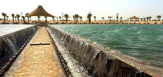

.jpg "Miracle Cave")


-
MOOSA RIVER
- Prophet Moses (peace be upon him) holds great importance in Islam and is considered one of the major prophets. His story is mentioned multiple times in the Quran, and he is recognized for his leadership, prophethood, and miraculous experiences. In the Quran, the story of Prophet Moses includes his birth, being placed in a basket in the river by his mother to protect him from Pharaoh's decree to kill all male children, his rescue by Pharaoh's wife, his upbringing in Pharaoh's palace, his mission as a prophet, and the miracles he performed. Rivers also hold symbolic significance in the Quran and Islamic tradition. They are often associated with life, purification, and blessings. The mention of rivers in the Quran can be found in various contexts, such as descriptions of paradise, the Garden of Eden, and blessings bestowed upon the righteous. If there is indeed a "Moosa River" in Quranic Park, it is likely designed to represent the river associated with Prophet Moses' story. It may offer a thematic experience, providing visitors with insights into the Quranic narrative, the historical significance of rivers in Islamic culture, and the broader message of hope, faith, and divine guidance.
.jpg "GLASS HOUSE")
.jpg "GLASS HOUSE")
.jpg "GLASS HOUSE")
.jpg "GLASS HOUSE")
.jpg "LAKE OF MIRACLES")
.jpg "LAKE OF MIRACLES")